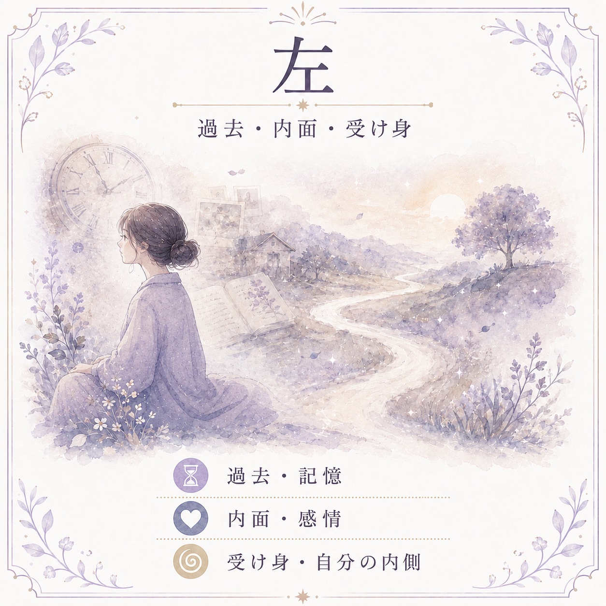
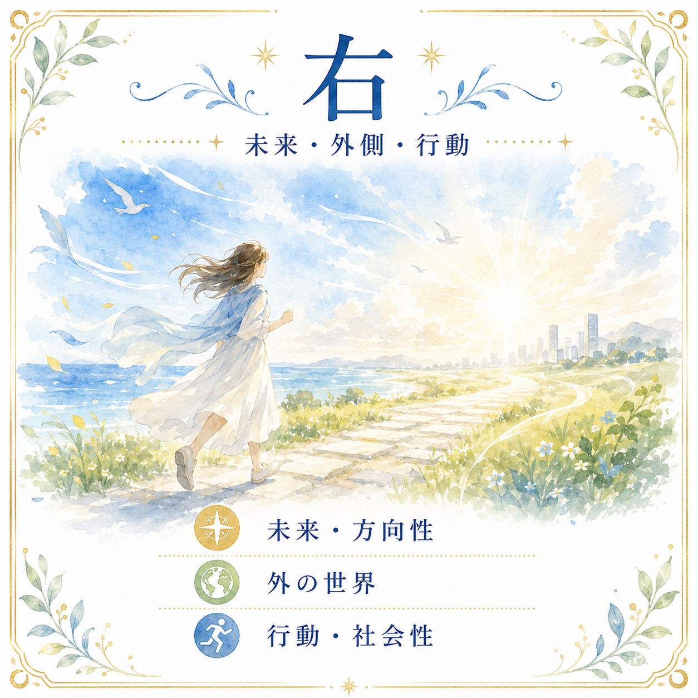

左と右の基本的な捉え方
カードの左側と右側には、それぞれ違う意味の方向が割り当てられていることが多い。
- 過去
- 内面
- 受け身
- 女性性
- 感情
- 無意識
- 未来
- 外側への行動
- 能動性
- 男性性
- 意志
- これから向かう方向


この考え方を使うと、カードの人物がどちらを向いているか、どちら側に象徴があるかを見ることで読み方が変わってくる。
たとえば人物が右を向いていれば「未来を見ている」「外へ向かおうとしている」。左を向いていれば「過去に意識が向いている」「まだ引きずっているものがある」といった方向で読める。また、剣や花などの象徴が左側に描かれていれば「過去に関係する要素」、右側にあれば「これから影響してくる要素」として読むこともできる。
逆位置にすると左右も変わる
カードを逆位置にすると、上下だけでなく左右の関係も反転する。
正位置で右側にあったものが、逆位置では左側に来る。つまり、未来や行動として読んでいた象徴が、過去や内面の問題として読めるようになる場合がある。
この捉え方は「逆位置だから悪い」という単純な読み方とは異なる。象徴の位置が変わったことで、その意味がどこに移動したのかを考えるという視点になる。
- 正位置：右側の象徴 → 未来・これからの行動として読む
- 逆位置：同じ象徴が左側へ → 過去のこと・内面の問題として読める
リーディングでの使い方
左右の意味は、絶対的なルールとして覚えるものではない。解釈のフックとして使うのが自然な使い方になる。
カードの人物が左を向いていれば、「過去に意識が向いている」「内面を見つめている」「まだ過去の出来事を引きずっている」と読める。右を向いていれば、「未来を見ている」「これから行動しようとしている」「外側に意識が向いている」という方向で読める。
象徴の位置についても同じように考えられる。左にある象徴なら「過去に関係するもの」「内側から来ているもの」、右にある象徴なら「これから影響してくるもの」「外へ向かう力」として読むことができる。
ただし、すべてのカードで左右を厳密に当てはめる必要はない。全体の絵柄の印象や、スプレッド内での他のカードとの関係と合わせて、ひとつの読み解きのヒントとして使う程度がちょうどよい。
まとめ
カードの左側は過去・内面・受け身、右側は未来・行動・能動性という方向で読める。
逆位置にすると左右が反転するため、象徴の意味がどちらに移動したかを考えることで、単純な「逆位置＝悪い」という読み方を超えた解釈ができるようになる。
カードのキーワードだけに頼らず、絵柄の配置や構図からも意味を拾っていくことで、リーディングはより自由で深いものになる。